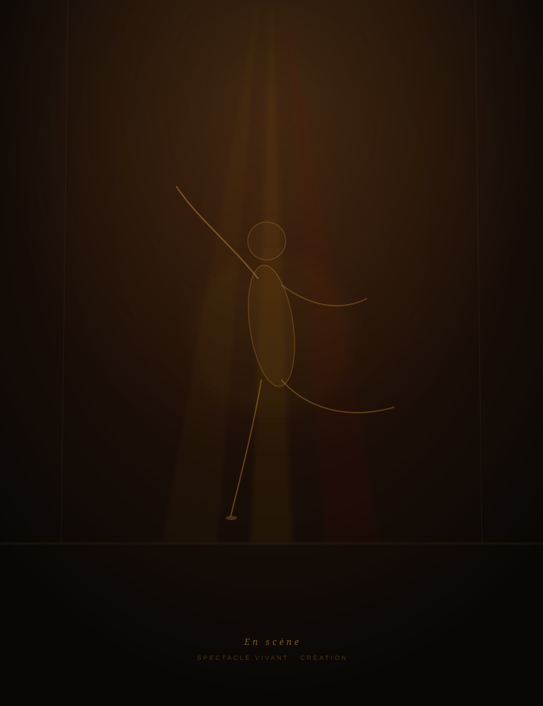
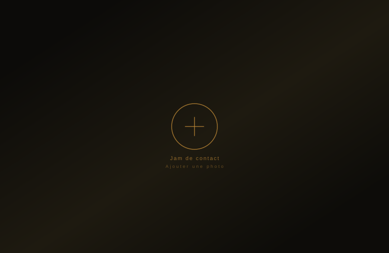
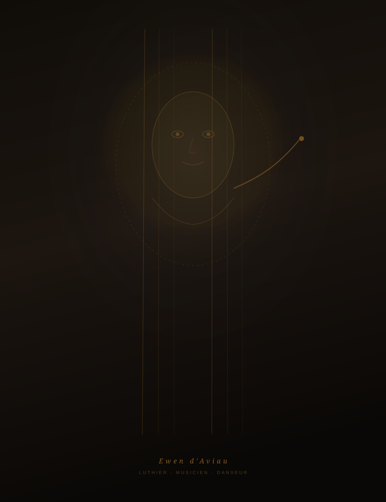
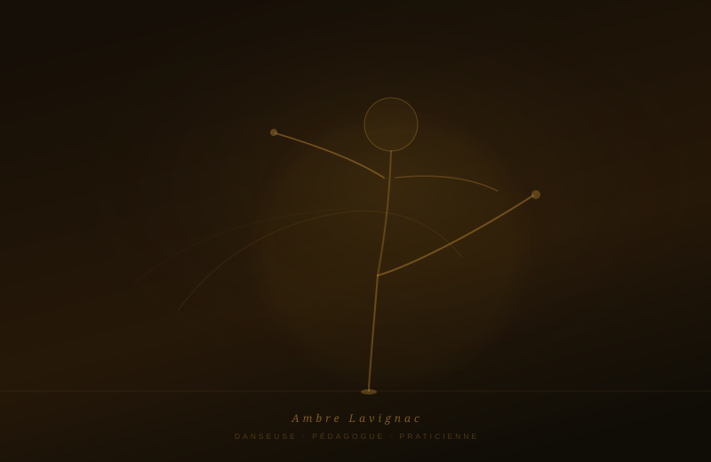

Jeune compagnie · Association loi 1901
Ambre Lavignac & Ewen d'Aviau
Danse contemporaine
Contact-improvisation
Musique improvisée
Pratiques somatiques
Le corps sait ce que l'esprit ne sait pas.
À peine formée, la compagnie fait ses premiers pas. Nous sommes deux, venus au mouvement par des chemins qui n'ont rien à voir. Ce qui nous met en joie : créer ensemble, sans savoir d'avance ce qui va arriver.
Galerie
Photos de la compagnie — remplacez ces images
par vos propres clichés (JPEG, min. 1200 px).

En scène
Spectacle vivant · Création

Jam de contact
Contact-improvisation · Rencontre ouverte

Ewen d'Aviau
Luthier · Musicien · Danseur

Ambre Lavignac
Danseuse · Pédagogue · Praticienne
En résidence
Laboratoire artistique · Recherche
Pédagogie du sensible
Atelier · Stage · Transmission
À peine formée, la compagnie fait ses premiers pas. Elle est née de la rencontre de deux corps aux histoires différentes : l'une venue de la danse contemporaine, l'autre de la lutherie, passé par plusieurs arts et techniques de danse en y cherchant chaque fois un dépassement.
Ce qui nous met en joie, c'est la créativité collective et partagée. L'inattendu, l'impromptu, l'improvisation. Ce moment où personne ne sait encore ce qui va se passer, et où l'on y va quand même.
Et puis chercher, encore et toujours : comment habiter davantage son corps, comment être dans une présence de plus en plus juste, de plus en plus fine. Nous nous appuyons pour cela sur les pratiques somatiques, le Tao et la kinésiologie.
Il y a dans ce travail une recherche d'intimité, et ce n'est pas un repli — c'est l'inverse. Être plus proche de soi, précisément au contact des autres. Rester relié à soi pendant qu'on est en relation : c'est là, pour nous, que tout se joue.
Cela demande de savoir où l'on en est. « Je suis où, là ? » Il y a des jours où l'on n'est pas disponible pour être à deux, faute d'en avoir les ressources ce jour-là. Ce n'est pas un échec, c'est une information. Nous accueillons les limites telles qu'elles sont, dans le présent.
Nous enseignons à deux, depuis deux pratiques distinctes. C'est ce croisement — le somatique et la danse, le geste et le son — qui fait, nous semble-t-il, ce que l'on ne trouve pas ailleurs.
Vous n'avez pas besoin de savoir danser. Ce que nous entendons le plus souvent au début, ce sont ces phrases-là : « je n'ose pas danser devant les autres », « j'ai du mal avec mon corps », « j'ai peur du sol », « je me sens seul ». C'est exactement de là que l'on part.
Nous espérons rencontrer des gens émerveillables, curieux d'aller chercher et d'expérimenter. Nous ne saurions pas quoi faire, en revanche, de quelqu'un qui viendrait chercher un chemin tout tracé, ou quelqu'un à admirer. Ici, l'engagement que vous mettez pour vous-même compte davantage que ce que nous pourrions vous apporter.
Note d'intention
01
La compagnie a pour but la création de performances : des pièces en duo ou avec des artistes invités, où la frontière entre la partition musicale et la partition corporelle s'efface. Grandir, et faire grandir ceux qui regardent. Les premières sont en chantier.
02
Non pas une absence de forme, mais une forme en devenir. L'inattendu et l'impromptu ne sont pas des accidents que l'on rattrape : ce sont nos matériaux de départ.
03
Nous ne partons pas d'un vocabulaire à apprendre, mais de mouvements que vous portez déjà : marcher, s'appuyer, se tourner. Ils sont là, à l'état de graine ; notre travail est de les faire germer, sans rien couper de votre histoire.
Les fondateurs
Danseuse · Pédagogue · Praticienne du mouvement
Venue de la danse contemporaine, Ambre oriente sa recherche vers les pratiques somatiques et les savoirs corporels anciens : philosophie taoïste, méridiens, kinésiologie, massage. Elle explore les correspondances entre les éléments, la circulation de l'énergie et les qualités de mouvement.
S'il ne lui fallait transmettre qu'une chose, ce serait la sensation — cette finesse d'écoute que l'on affine peu à peu, en allant contacter une part de soi et en l'écoutant. L'improvisation est pour elle un espace de création vivante, et une affaire de poésie.
Danse contemporaineImprovisationSomatiqueTaoMéridiensKinésiologieMassagePédagogie
Luthier-ingénieur · Musicien · Danseur
Luthier, Ewen est venu au mouvement par plusieurs arts et techniques de danse, en y cherchant chaque fois un dépassement. Il conçoit le son comme une matière vivante, façonnable, imprévue.
S'il ne lui fallait transmettre qu'une chose, ce serait l'interconnexion : comment toutes les parties du corps peuvent être partie prenante d'un même mouvement. Une synergie, plutôt qu'une somme de gestes.
LutherieMusique improviséeContact-improvisationSomatiqueAïkidoEnseignement
Ce qui nous traverse
Les pratiques somatiques
Écouter le corps avant de lui demander
Le mouvement inné
Ce que le corps sait depuis l'enfance
Le Tao
Fluidité, transformation, non-résistance
La kinésiologie
Le corps comme source d'information
Le contact-improvisation
Le poids, l'appui, l'écoute à deux
La musique improvisée
Le son comme matière vivante
Ce que nous proposons
Un rendez-vous de 2 h 30, ouvert à tous, sans prérequis ni niveau demandé. On y explore le mouvement à deux voix, et l'on repart avec quelque chose à pratiquer chez soi.
Sur une journée ou un week-end, autour d'une thématique. Deux intervenants, une trentaine de personnes au maximum : au-delà, la qualité de présence que nous voulons offrir ne tiendrait plus.
Des sessions d'improvisation ouvertes, en contact-improvisation et musique improvisée. On vient danser, jouer, se rencontrer.
Pièces en duo ou avec des artistes invités. La compagnie débute : les premières créations sont en cours d'élaboration.
Sur demande, pour des groupes constitués, des structures ou des événements. Nous adaptons le format et la thématique.
Où nous aimerions jouer
Identité & valeurs
Sensation
Avant la forme, la sensation. C'est elle qui guide le mouvement, et c'est elle que nous cherchons à affiner : cette finesse d'écoute que l'on développe en allant contacter une part de soi.
Interconnexion
Comment toutes les parties du corps peuvent être partie prenante d'un même mouvement. Une synergie, plutôt qu'une somme de gestes.
Mouvement inné
Nous partons de ce que le corps a développé depuis l'enfance — marcher, s'appuyer, se tourner — plutôt que d'un vocabulaire venu d'ailleurs. Rien n'est coupé de votre histoire.
Deux voix
Nous enseignons à deux, depuis deux pratiques distinctes : le somatique et la danse, le geste et le son. C'est le croisement qui fait la richesse.
Limites
Savoir où l'on en est, ce qui est juste pour soi. On n'est pas toujours disponible pour être à deux : c'est une information, pas un échec.
Joie
C'est le mot qui revient le plus souvent chez ceux qui repartent. La joie du relationnel, du jeu, de l'échange avec une autre personne.
Partir de ce que le corps sait déjà —
et le faire germer.
Poivre & Sens · Note d'intention
Nous rejoindre
La compagnie
La compagnie débute. Pour être prévenu des premières dates — dimanches, stages, jams — le plus simple est de laisser votre adresse dans le formulaire ci-dessus.
Les fondateurs
Suivre la compagnie
Retrouvez Poivre & Sens dans les réseaux du spectacle vivant, les festivals de contact-improvisation et les scènes de musique improvisée en France et en Europe. Abonnez-vous à notre liste de diffusion pour recevoir les prochaines dates.